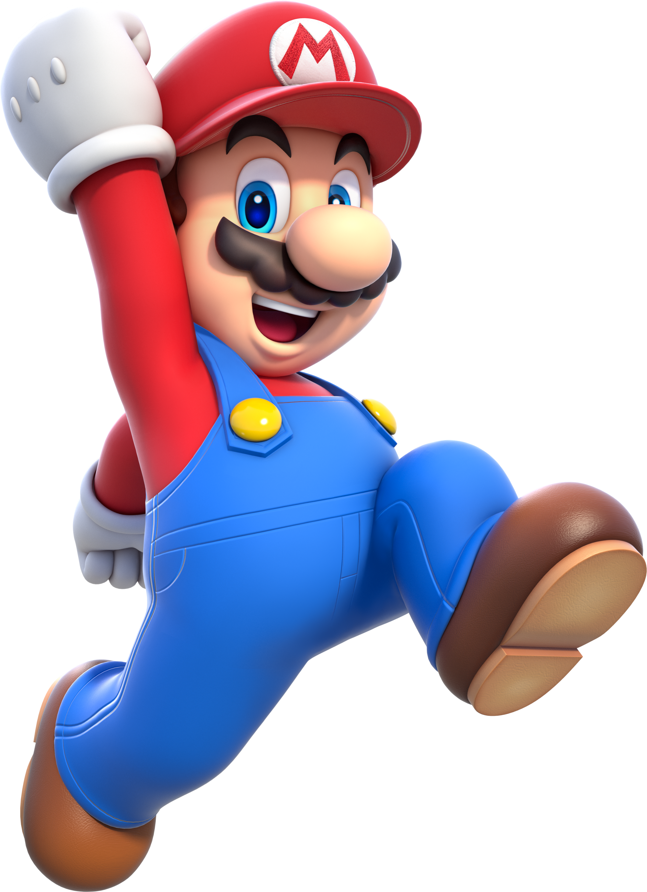
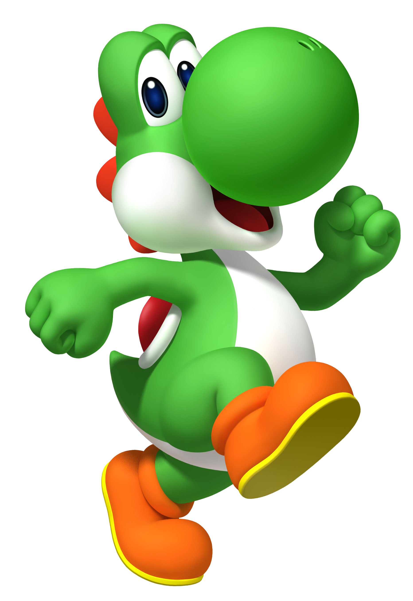
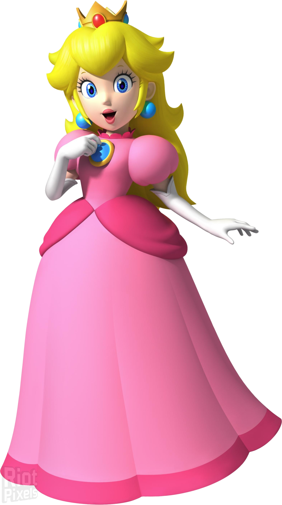
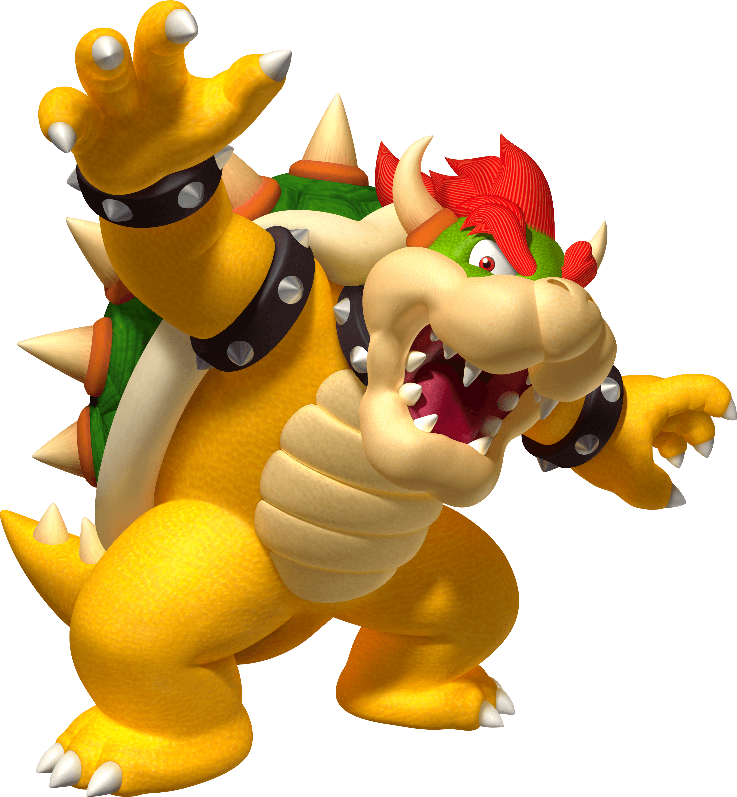
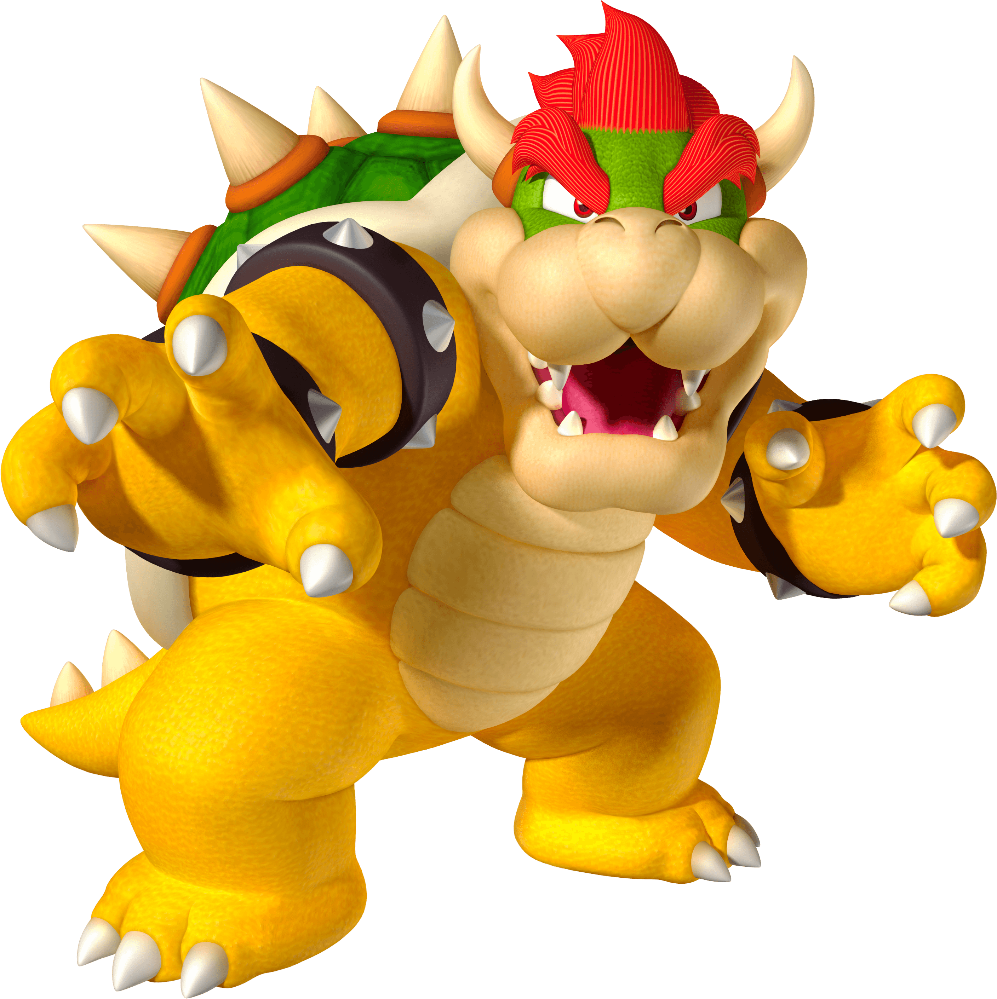
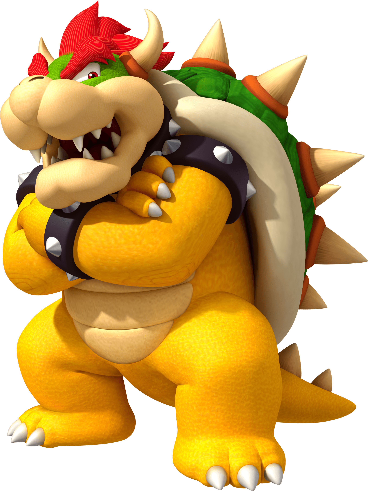
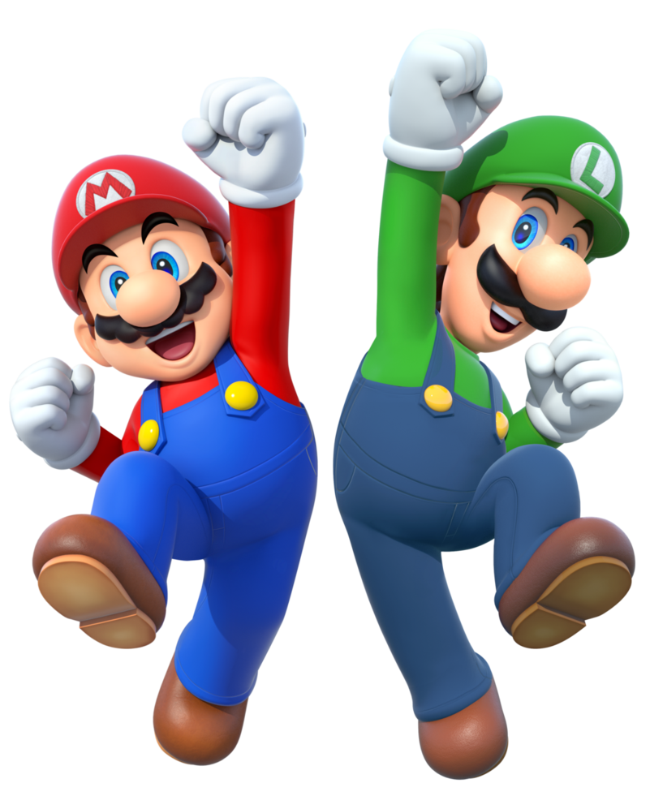
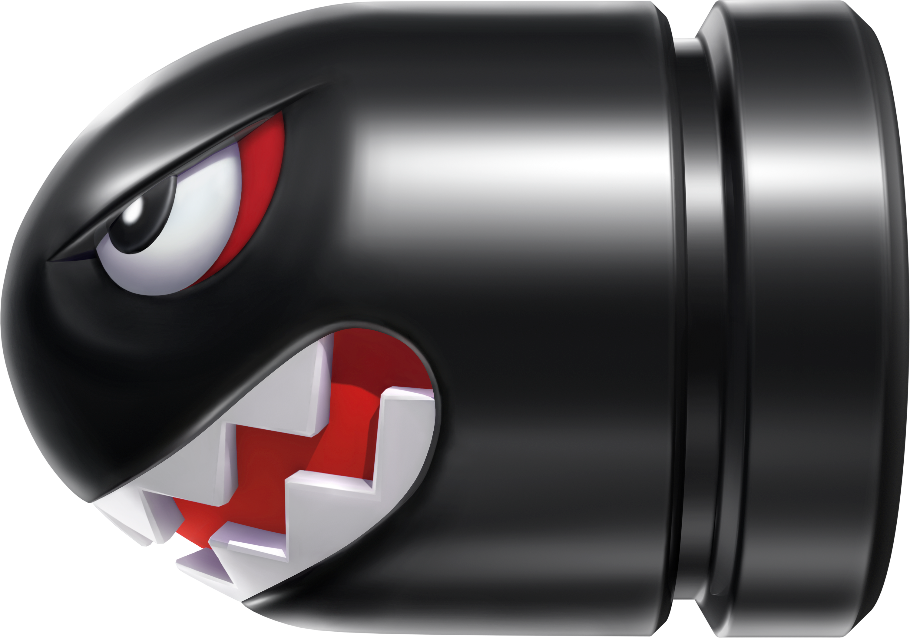
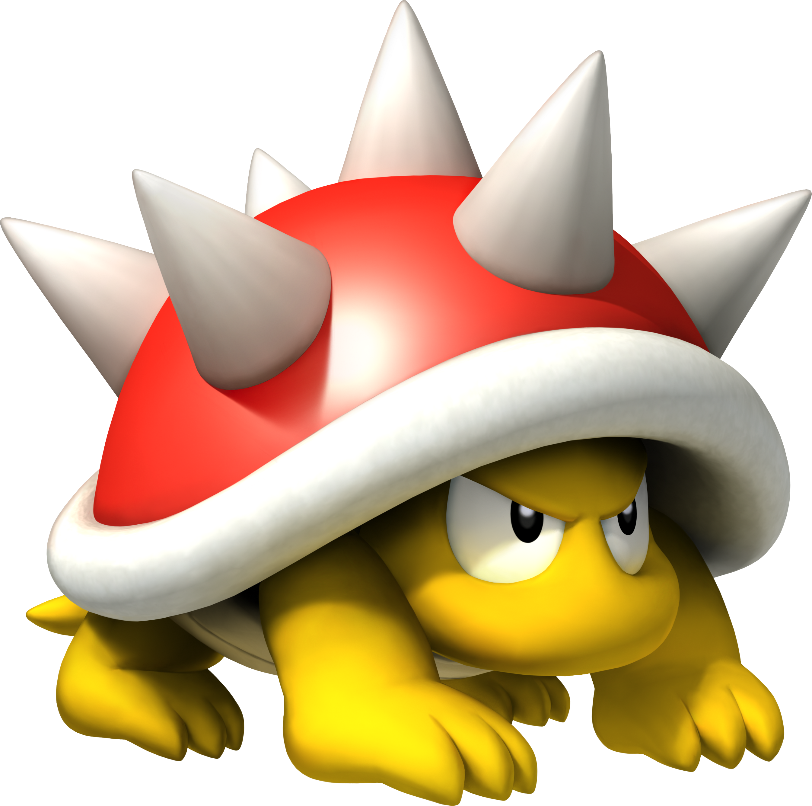

// src/models/LevelManager.h
#pragma once
#include <vector>
#include <memory>
#include "Path.h"
#include "Tower.h"
#include "WaveManager.h"
#include <random>
class LevelManager
{
public:
LevelManager(int width, int height, const std::vector<Path> &paths, int numWaves, int enemiesPerWave);
LevelManager(const LevelManager &) = delete;
LevelManager &operator=(const LevelManager &) = delete;
int getWidth() const;
int getHeight() const;
bool isBuildable(int x, int y) const;
bool placeTower(int x, int y, std::unique_ptr<Tower> tower);
bool removeTower(int x, int y);
Tower *getTower(int x, int y) const;
const std::vector<Path> &getPaths() const;
const Path &getPath(size_t index) const;
size_t getNumPaths() const;
WaveManager &getWaveManager();
void reset();
void setEnemyFactories(const std::vector<WaveManager::EnemyFactory> &enemyFactories);
private:
int width_;
int height_;
std::vector<std::vector<int>> map_; // 0: empty, 1: path, 2: buildable
std::vector<std::vector<std::unique_ptr<Tower>>> towers_;
std::vector<Path> paths_;
WaveManager waveManager_;
};

// src/models/GameState.h
#pragma once
class GameManager; // Forward declaration
class GameState {
public:
virtual ~GameState() = default;
virtual void enter(GameManager &manager) {}
virtual void update(GameManager &manager, float dt) = 0;
virtual void handleInput(GameManager &manager) {}
virtual void exit(GameManager &manager) {}
};
// src/models/GameManager.h/.cpp (state logic)
class GameManager {
// ...
void setState(std::unique_ptr newState) {
if (currentState_)
currentState_->exit(*this);
currentState_ = std::move(newState);
if (currentState_)
currentState_->enter(*this);
}
void update(float dt) {
if (currentState_)
currentState_->update(*this, dt);
}
void handleInput() {
if (currentState_)
currentState_->handleInput(*this);
}
// ...
};
GameState, which defines the
interface for entering, updating, handling input, and exiting a state.GameManager holds a pointer to the current state and
can switch states at runtime using setState().MainMenuState, PlayingState,
PausedState, GameOverState, and VictoryState.

// Factory Pattern: Enemy creation (src/models/WaveManager.h)
using EnemyFactory = std::function(const Path&)>;
// State Pattern: GameState base (src/models/GameState.h)
class GameState {
public:
virtual ~GameState() = default;
virtual void enter(GameManager &manager) {}
virtual void update(GameManager &manager, float dt) = 0;
virtual void handleInput(GameManager &manager) {}
virtual void exit(GameManager &manager) {}
};
// Observer Pattern: Event system (uml_tower_defense.puml)
interface IObserver {
void onNotify(event: GameEvent);
}
class EventDispatcher {
void addObserver(IObserver* obs);
void removeObserver(IObserver* obs);
void notify(event: GameEvent);
};
GameState and its subclasses for
menu, play, pause, etc.).EnemyFactory, TowerFactory).
EventDispatcher and
IObserver for UI/game events).
Enemy subclasses, Tower subclasses).
